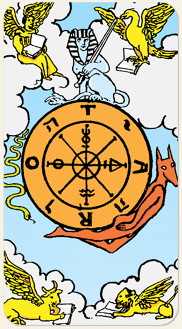

Os altos e baixos da vida, o karma e a oportunidade. Ela nos ensina que, enquanto o mundo externo gira em ciclos de sucesso e fracasso, o equilíbrio real é encontrado no centro da roda, o ponto de paz interior que permanece imóvel enquanto tudo ao redor muda.
Os ciclos, os seres, o meio das estações, os quatro pontos da Astrologia: Touro e Escorpião são vida e morte, Leão e Aquário são o eu e os outros, Iavé em hebraico, símbolos alquímicos.
Positivo: Boa fortuna, boa sorte, manter o ciclo, autoconhecimento, estratégia, estudar os recursos, recomeço, continuar tentando.
Negativo: Ventos contrários, azar, desfavorecimento, falta de visão do contexto, perder o eixo da roda, não saber qual parte da roda está emperrada.
Símbolos: Roda, Esfinge, Serpente, Os Quatro Seres, Símbolos Alquímicos, Hermanúbis.
Cores: Amarelo, Azul, Vermelho Cinza.
Elemento: Espírito.